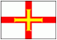

La priéthe en Jèrriais dans l''Églyise du Carmel du Pater à Jérusalem
|
Nouotre Péthe
Nouotre péthe, tch'es dans les cieux, Âmen
|
Nou dait dithe qué, ouaithe qu'il existe des vèrsions d'la Priéthe du Seigneu en Jèrriais, nou dit bein souvent la Priéthe en Français ou en Angliais, même duthant des sèrvices èrligieurs en Jèrriais.
Né v'chîn eune vèrsion en St.-Martinnais, l'dgialecte d'Saint Martîn:
|
Nouotre pèthe tchi es dans les cieux. Qué ton nom s'thait sanctifié. Qué ton règne veint. Qué ta volanté s'thait faite sus la tèrre coume au ciel. Donne nous aniet nouotre pain d'la journée et pardonne nouos nos offenses coumme j'pardonnons les siens tchi nos ont offensés et né nous mène pas en tentation mais délivre-nous du ma. Car à té est lé règne, l'pouver et la glouaithe au siècl'ye des siècl'yes. Amen.
|
Et né v'chîn eune pus vielle vèrsion en St.-Ouennais, l'dgialecte d'Saint Ouën. Dans chutte vèrsion nou dit les preunmièrs mots en Français. En Jèrriais, che s'sait "Nouot' Pèthe".
|
Notre Père, tch'es dans les Cieux, Qué Tan Nom sait saint. Qué Tan règne veinge. Qué ta volanté sait faite sus la tèrre comme au Ciel. Donne-nous aniet nouot' pain dé touos les jours. Pardonne-nous nouos péchés, comm-é j'pardonnons ès cheins tchi nouos ont offensés. Et né nouos laîsse pon tchaie dans la tentâtion, mais d'livre-nous du ma. Car lé règne T'appartchient, et l'pouver et la glouaithe, à tout janmais. Amen.
|
Né v'chîn eune aut' vèrsion:
|
Nouot' Péthe qu'es au ciel qu'Tan nom sait sanctifié qu'Tan règne veinge qu'Ta volanté sait faite sus la tèrre coumme au ciel baille-nouos aniet not' pain d'la journée et nouos pardonne nouos offenses coumme nou pardonne les cheins tchi nouos ont offensé et n'nouos mène pon dans la tentâtion mais délivre-nouos du ma car à Té est lé règne, l'pouver et la glouaithe au siècl'ye des siècl'yes Amen
|
Né v'chîn eune vèrsion d'la Priéthe du Seigneu dêmuchie dé d'dans un vièr neunmétho du magâsîn The Pilot. Chutte vèrsion-chîn est à ou et à vous auve lé Bouôn Dgieu, v'là tch'est difféthent ès aut's vèrsions qué j'connaîssons.
|
Nouotre Péthe tch'est dans les cieux, qué vouot' nom sait sanctifié; Qué vouot' règne veinge; Qué vouot' volanté sait faite sus la tèrre comme au ciel. Donnez-nous aniet nouot' pain d'touos les jours. Et pardonnez-nous nouos péchés comme j'pardonnons ès cheins tchi nouos ont offensés. Et né nouos laissiz pas tchaie en tentation; mais d'livrez-nous du ma; car à vous appartcheint l'règne, la piêssance et la glouaithe, à tout janmais. Amen.
|
Nou-s'a chanté chu Nouotre Péthe ès sèrvices:
Et pouor êt' chanté sus l'air dé Robert Stone (dans les 1550):
En 2000, ch'fut annoncé qu'la Priéthe du Seigneu en Jèrriais s'sait ajouôtée ès vèrsions dans les difféthentes langues tchi sont êcrites sus les muthâles du Couvent du Carmel du Pater. La vèrsion Jèrriaise est la chent-dgiêx-huitième vèrsion.
Ch'est à r'mèrtchi étout qué l'idée vînt à l'esprit d'George d'la Forge quand i' vîsitit la Tèrre Sainte y'a bein d's années:
L'Églyise du Carmel du Pater
Eune chose èrmèrquabl'ye dans l'égl'yise est qu'la priéthe: "Not' Péthe tch'Est aux Cieux" (le "Pater Noster") est êcrite sus des pliaques dans les muthâlles dans trente-chînq difféthents langages. Quandis qué j'tais-là j'avais quâsi envie d'suggéther tch'i' dév'thaient l'y-en mett' ieune en bouan vièr Jèrriais étout!
Chroniques de Jersey 21/10/1953
 Né v'chîn la vèrsion "officielle" en Français tch'est dans la Litourgie et tchi s'dit ès Êtats avant châque séance:
Né v'chîn la vèrsion "officielle" en Français tch'est dans la Litourgie et tchi s'dit ès Êtats avant châque séance:
|
Notre Père qui es aux cieux, Ton Nom soit sanctifié, Ton Règne vienne, Ta volonté soit faite en la terre comme au Ciel. Donne-nous aujourd'hui notre pain quotidien, et pardonne-nous nos offenses comme nous pardonnons à ceux qui nous ont offensés. Et ne nous induis point en tentation mais délivre-nous du mal. Car à toi est le Règne, la Puissance et la Gloire, aux siècles des siècles. Amen.
|
 Né v'chîn trais vèrsions Dgèrnesiaises, dans la langue d'not' île-soeu, Dgèrnesy:
|
Noter Père qu'es au ciel, Qué ton naöm seit sanctifiaï, Qué ton règne vianne, Qué ta volontai seit faite sus la terre coum au ciel, Baille-naöns ogniét not poin pour la journaïe, Et nou pardonnes nos offences coum nou pardaönne chäeux qui nous aönt offensaï, Et nou meunne pas dans la tentaciaön, Mais délivre-naöns du mal. Car à té est lé règne, la puissance et le glouaire, au sièclle des sièclles, Amen
Noter Père, qu'est au Ciel, Amen
Notre père qui es au ciel; Amen.
|
Viyiz étout:
{kind=link}
{kind=link}